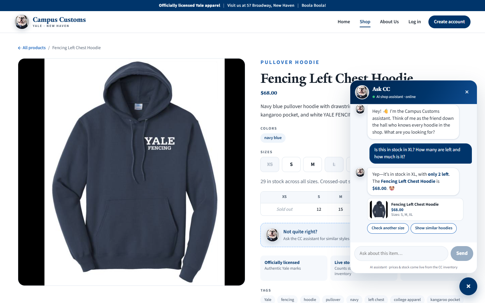
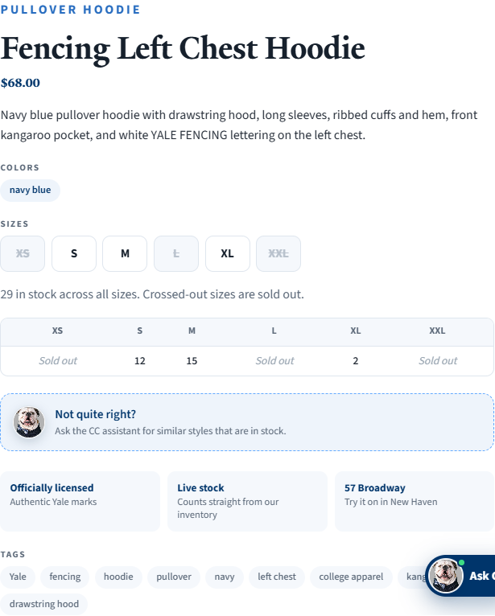
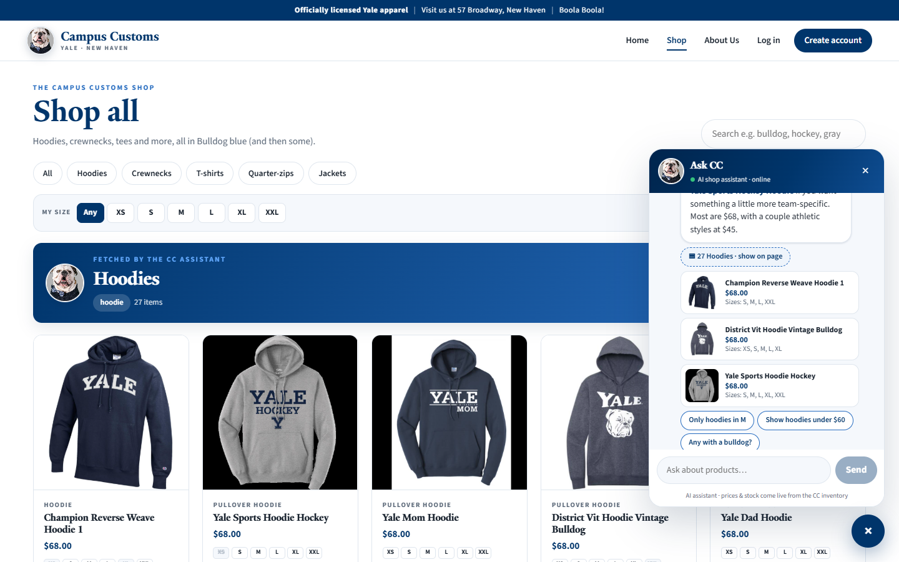
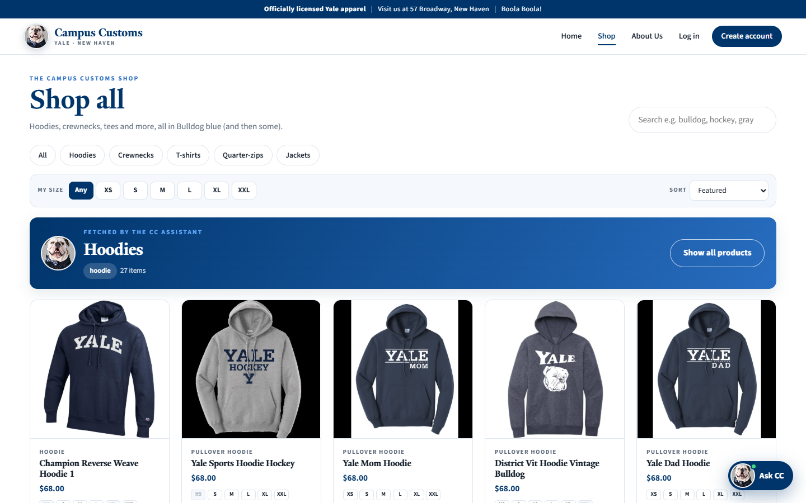
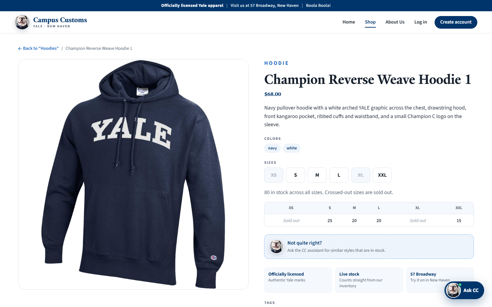
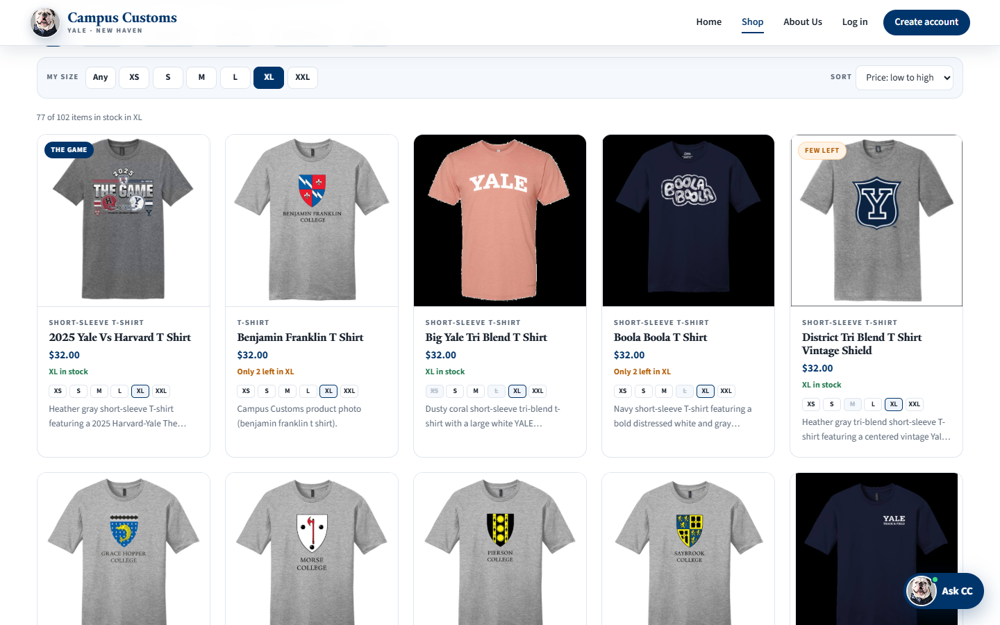

| # | Check | What was verified | Result |
|---|---|---|---|
| 1 | Chat checks an item's inventory level | Chat said "only 2 left" in XL at $68.00. The DB has XL = 2 and price = 68.0. | ✔ Pass |
| 2 | Dynamic search-result cards after a category question | "What hoodies do you have?" put 27 cards on the Shop page. The DB has 27 hoodies. Clicking a card opened its detail page. | ✔ Pass |
| 3 | Problem 9 usability feature: "My size" filter + sort | XL filter showed "77 of 102 items". The DB has 77 products in stock in XL. Prices sorted low→high, and the size was remembered after a reload. | ✔ Pass |
1.Chat checks the inventory level of an item

check_stock / get_product_info database tools, not a guess.

DB check:
SELECT price FROM catalogue WHERE product_id='fencing-left-chest-hoodie' → 68.0 ·
inventory → XS 0, S 12, M 15, L 0, XL 2, XXL 0.2.Dynamic search-result cards after a category question



DB check: 27 catalogue rows have a hoodie
garment_type, and the page rendered 27 cards.
The clicked card /products/champion-reverse-weave-hoodie-1 opened "Champion Reverse Weave Hoodie 1".3.Usability feature from Problem 9: "My size" filter + sort

DB check: 25 products have
XL = 0, so 102 − 25 = 77 ✔. The prices on the page were
confirmed ascending, and after a page reload the "XL" choice was still selected (saved in localStorage).